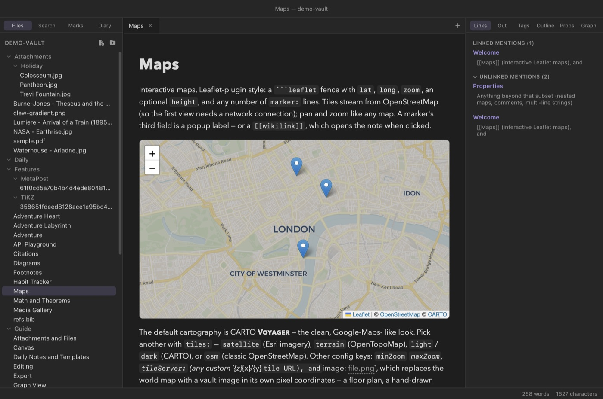
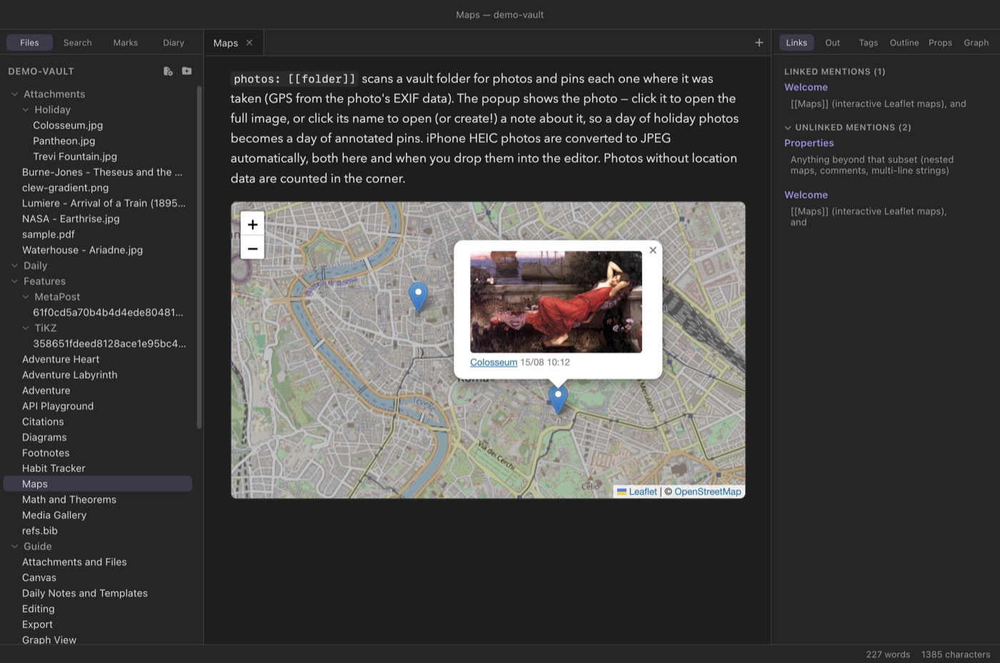

Reading mode
Interactive maps
A ```leaflet fence turns into a live, pannable map when the
note renders: real cartography, clickable markers, regions, tracks, and
photo pins. Clew builds most of the Obsidian Leaflet plugin's surface
directly into the app — no plugin to install — and adds a few things of
its own, most notably photo maps that pin every geotagged photo in a
folder. Because a map is just a code fence, it lives in the note like
any other text: it travels with the vault, diffs cleanly in git, and
survives every other editor untouched.
A first map
A map is a fenced code block whose language is leaflet.
Inside the fence, one option per line, in key: value form.
The essentials are a centre (lat and long), a
zoom level, and optionally a height:
You write
```leaflet
lat: 51.5074
long: -0.1278
zoom: 13
height: 380
marker: 51.5007, -0.1246, Westminster
marker: 51.5194, -0.1270, The British Museum
marker: 51.5145, -0.1163, [[Welcome|The LSE]]
```
Switch the note to reading mode and the fence becomes a map of central
London with three pins. Pan by dragging, zoom with the scroll wheel or
the +/− control, and click a pin to open its
popup. A marker line is marker: lat, long followed by an
optional third field: plain text becomes a popup label, and a
[[wikilink]] becomes a popup link that opens the
note when clicked (⌘-click opens it in a new tab). The
[[Note|display text]] form works exactly as it does in
prose, so the popup can say something friendlier than the file name.

```leaflet fence in reading mode (demo vault,
Features/Maps): live tiles, pan and zoom, and markers whose popups can
link to notes in the vault.Map tiles stream from the network, so viewing a map needs a connection. The one fully offline variety is the image-based map, which renders from a file in your vault.
maxZoom and
maxzoom are the same key), unknown keys are ignored, and a
line that does not parse is skipped rather than breaking the map. A
fence with no lat/long at all is fine too:
the map fits itself around whatever markers it has.
Cartography and tile servers
The default cartography is OpenStreetMap's classic
rendering. Five other named styles are built in; pick one with
tiles: (or its alias style:). A caution about
the CARTO styles: CARTO began watermarking keyless requests with "API
KEY REQUIRED" tiles, so voyager, light and
dark are best pointed at your own key-fronting proxy via
tileServer:.
| Style | Source | Character |
|---|---|---|
osm | OpenStreetMap | The default: the classic OpenStreetMap rendering. |
voyager | CARTO | Clear, modern, Google-Maps-like cartography. |
light | CARTO | Near-white minimal basemap — good under dense marker sets. |
dark | CARTO | Dark basemap that matches Clew's dark theme natively. |
satellite | Esri | Aerial imagery. |
terrain | OpenTopoMap | Topographic style with contour lines and hillshading. |
When Clew is in its dark theme, light tile styles are automatically
dimmed so the map sits comfortably in the page; styles that are
already dark or photographic (dark,
satellite) are left alone. The darkMode key
from the Obsidian Leaflet plugin is accepted for compatibility, but in
Clew the theme handling is automatic.
Beyond the named styles, tileServer: accepts any standard
{z}/{x}/{y} tile URL template — a self-hosted tile
server, a historical-map provider, a game map. Two companions refine
it: tileOverlay: (repeatable) draws additional
semi-transparent tile layers over the base map, and
tileSubdomains: supplies the subdomain letters for
servers that use a {s} placeholder.
You write
```leaflet
lat: 46.4
long: 8.0
zoom: 10
tiles: terrain
```Markers
The full form of a marker line is:
You write
marker: [type,] lat, long [, label or [[wikilink]] or [[wikilink|label]]]
The optional leading type colours the marker. Seven named
colours render as filled dots — red, orange,
yellow, green, teal,
blue, purple — which is enough to build a
simple legend (red for restaurants, blue for museums). The type
default, and any name Clew does not recognize, falls back
to the standard pin.
You write
marker: red, 41.8902, 12.4922, [[Colosseum]]
marker: blue, 41.9022, 12.4539, Vatican Museums
marker: 41.8986, 12.4769, Largo di Torre ArgentinaMarkers gathered from your notes
Listing coordinates by hand is fine for three pins; it does not scale to a travel journal. Three repeatable options gather markers from the frontmatter of other notes instead, so the map stays in one place while the data lives where it belongs:
markerFile: [[Note]]- Adds a pin for one specific note.
markerFolder: Trips- Adds a pin for every note in a folder (searched recursively).
markerTag: #travel- Adds a pin for every note in the vault whose frontmatter
tags:include the tag.
A note earns a pin by carrying a location property; two
further properties are optional:
You write (in the pinned note's frontmatter)
---
location: [41.8902, 12.4922]
mapmarker: red
map-label: The Colosseum
---
location is the coordinate pair (the brackets are
optional); mapmarker is a marker type, exactly as in a
marker: line; map-label overrides the popup
text, which otherwise defaults to the note's name. Every gathered
marker links back to its note, so the map doubles as a spatial index:
click the pin, read the note.
You write
```leaflet
markerFolder: Trips
markerTag: #travel
height: 420
```markerTag matches tags in a note's frontmatter
only — the inline tags: [travel, italy] array or the
YAML list form. Inline #travel hashtags in the body of a
note are not scanned. Markers are also gathered when the note
containing the map renders, so a location added to another note shows
up the next time the map's note is re-rendered, not instantaneously.
Regions, tracks, and overlays
Three kinds of geometry can be drawn over the base map, each loaded
from a file in the vault (referenced by [[wikilink]] or a
plain path, all repeatable):
- GeoJSON regions —
geojson: [[regions.json]]draws the file's features, coloured bygeojsonColor:(default blue). A feature with anameortitleproperty gets it as a hover tooltip. - GPX tracks —
gpx: [[walk.gpx]]draws the recorded track as a line coloured bygpxColor:(default orange), with a green dot at the start, a red dot at the end, and a small purple dot for each named waypoint. A hike, a cycle tour, a run exported from a watch — they all drop straight in. - Circle overlays —
overlay: [color,] lat, long, radius[unit] [, label]draws a translucent circle: a blast radius, a delivery zone, a “within walking distance” ring. The radius takes a unit suffix —m,km,mi, orft(metres when omitted) — andoverlayColor:sets the default colour for circles that do not name their own.
You write
```leaflet
gpx: [[Attachments/coast-walk.gpx]]
gpxColor: teal
overlay: red, 51.5007, -0.1246, 500m, Search area
zoomFeatures: true
```
With zoomFeatures: true the map frames itself around the
loaded GeoJSON and GPX geometry instead of using
lat/long/zoom — handy when the
track is the point of the map.
Finally, imageOverlay: pins an image from the vault onto
real-world coordinates — a scanned historical map over the modern
city, a site plan over the satellite view:
You write
imageOverlay: [[rome-1748.png]], [[41.8, 12.4], [41.95, 12.55]]The two coordinate pairs are opposite corners of the rectangle the image should cover; the overlay renders semi-transparent so the base map shows through.
Image-based maps
Setting image: [[file.png]] replaces the world entirely:
the map becomes the image, in its own pixel coordinate system, fully
offline. This is the mode for floor plans, campus maps, board-game
boards, and fantasy worlds — anything that deserves pan, zoom, and
markers but has no latitude.
You write
```leaflet
image: [[Attachments/castle-plan.png]]
height: 420
marker: 640, 210, The keep
```
The image is resolved like any attachment wikilink, the map fits
itself to the image when it loads, and markers and circle overlays
work exactly as on a world map — their coordinates are read in the
image's own units rather than degrees. An explicit
bounds: [[0,0],[1000,1000]] substitutes a coordinate
system of your choosing for the image's pixel dimensions, which keeps
marker coordinates stable if you later re-export the image at a
different resolution.
Photo maps
The photos: option is Clew's own. Point it at a vault
folder and every geotagged photo in that folder becomes a pin, placed
where the photo was taken — the GPS coordinates come straight from the
photo's EXIF data. This fence is quoted verbatim from the demo vault's
Features/Maps note:
You write
```leaflet
photos: [[Attachments/Holiday]]
height: 380
```Each pin's popup shows a thumbnail of the photo, its capture day and time when the EXIF records one, and the photo's name as a link. Clicking the thumbnail opens the full image in a new tab; clicking the name opens — or creates — a note named after the photo. That second click is the point of the feature: a day of holiday photos becomes a day of annotated pins, each one a note you can write into, link from, and find again in search.

The mechanics, in order:
- The folder is found by its vault-relative path first; failing
that, Clew searches the vault for a folder whose path ends with what
you wrote, case-insensitively — so
photos: HolidayfindsAttachments/Holiday. (markerFolderresolves the same way.) - Only JPEG files are scanned, because JPEG is where EXIF GPS lives; other image types in the folder are ignored.
- iPhone HEIC photos are converted to JPEG
automatically, once, alongside the original — an existing,
newer
.jpgis never overwritten — so a folder of photos dragged off an iPhone needs no manual preparation. - Photos without location data are not lost silently: a small counter in the corner of the map reports how many were skipped, and a misspelled folder reports itself the same way.
- With no
lat/longin the fence, the map fits itself around the pins automatically.
sips tool
that ships with macOS, so it runs on Macs only. On Windows and Linux,
unconverted HEIC photos are counted in the “without location” corner
note; convert them to JPEG before adding them to the folder.
photos: fence pointed at that day's
folder. The map is the day's index — click a pin's name to
start the note about that place, and the note is created on the
spot.
Measuring distance
Every map carries a measuring tool: hold Shift and click
two points, and the map draws a dashed line between them and reports
the distance in its bottom-left corner. Shift-click again to
start a new measurement — the old line and distance go — or press
Esc to clear it. Two options tune the
readout: unit: selects m, km,
mi, or ft (kilometres by default), and
scale: multiplies the measured distance before display —
useful on image maps, where the underlying
units are pixels and only you know how many leagues the kingdom map
spans.
Framing and behaviour
A handful of options control how the map frames itself and how it responds to the user:
bounds: [[lat,long],[lat,long]]fits the view to a rectangle instead of a centre-plus-zoom.showAllMarkers: truefits the view around every marker even when a centre is given.minZoom:/maxZoom:clamp the zoom range;zoomDelta:sets the step a zoom click or scroll takes (e.g.0.5for finer control).noScrollZoom: truedisables wheel zoom — worth setting on tall maps that would otherwise capture the page's scroll.lock: truedisables panning and gesture zooming; combine it withnoUI: trueto remove the zoom buttons too, for a fully frozen figure that still renders live tiles and popups.recenter: truelets the reader pan but glides the view home a moment after they stop.noUI: truehides the zoom control.height:andwidth:size the map. A bare number means pixels (height: 380is 380px), and any CSS length works (height: 50vh,width: 80%). The default height is 400px.
Maps on published sites
When you publish a vault with File → Export → Vault as Website, maps stay fully interactive on the exported pages: the Leaflet library ships with the site's assets, tiles stream from the same servers, and the pins — including gathered note markers and photo pins, with their thumbnails — are baked into each page at export time. See Publishing as a website.
lat, long,
zoom, marker: lines, image:
maps, geojson, gpx, overlays, and the
framing options all read the same — so a vault written for the plugin
largely renders as-is, and keys Clew does not use (the plugin's
id:, for instance) are ignored harmlessly. In plain
Obsidian without the plugin, a ```leaflet fence displays
as an ordinary code block: nothing breaks, the map is just not drawn.
photos: is Clew-only.
Reference
The complete option surface of the ```leaflet fence.
Options marked “repeatable” may appear on multiple lines. Boolean
options accept true (or the bare key with no value).
| Option | Form | Effect |
|---|---|---|
lat, long | decimal degrees | Map centre. lng is an alias for long. Omit both to auto-fit around the markers. |
zoom | number | Initial zoom level (default 5). defaultZoom is an alias. |
minZoom, maxZoom | number | Zoom range limits. |
zoomDelta | number | Zoom step per click/scroll. |
height, width | number or CSS length | Map size; bare numbers are pixels. Height defaults to 400px. |
tiles / style | style name | Named tile style: voyager (default), light, dark, satellite, terrain, osm. |
tileServer | URL template | Custom {z}/{x}/{y} tile source; overrides tiles. |
tileOverlay | URL template, repeatable | Semi-transparent tile layer over the base map. |
tileSubdomains | letters | Subdomains for a {s} placeholder in the tile URL. |
marker | [type,] lat, long [, label/[[link]]], repeatable | A pin. Colour types: red, orange, yellow, green, teal, blue, purple. Wikilink popups open the note. |
markerFile | [[Note]], repeatable | Pin one note via its location frontmatter. |
markerFolder | folder, repeatable | Pin every note in a folder (recursive). |
markerTag | #tag, repeatable | Pin every note whose frontmatter tags include the tag. |
geojson | file, repeatable | Draw a GeoJSON file's features; geojsonColor sets the colour. |
gpx | file, repeatable | Draw a GPX track with start/end/waypoint dots; gpxColor sets the track colour. |
overlay | [color,] lat, long, radius[m|km|mi|ft] [, label], repeatable | Translucent circle; overlayColor sets the default colour. |
imageOverlay | [[file]], [[lat,long],[lat,long]], repeatable | Pin an image over real coordinates. |
image | [[file]] | Image-based map in the image's own coordinates; fully offline. |
photos | folder | Photo map: a pin for every geotagged JPEG in the folder. Clew-only. |
bounds | [[lat,long],[lat,long]] | Fit the view to a rectangle; on image maps, defines the coordinate system. |
zoomFeatures | boolean | Frame the view around the GeoJSON/GPX geometry. |
showAllMarkers | boolean | Frame the view around every marker. |
noScrollZoom | boolean | Disable wheel zoom. |
noUI | boolean | Hide the zoom control. |
lock | boolean | Disable all pan/zoom interaction. |
recenter | boolean | Glide back to the configured centre after a pan. |
unit | m/km/mi/ft | Unit for the Shift-click distance tool (default km). |
scale | number | Multiplier applied to measured distances. |
darkMode | boolean | Accepted for Obsidian Leaflet compatibility; Clew themes maps automatically. |
See also
- How rendering works — where fences like this one are rendered, and when notes re-render.
- Links and embeds — the wikilink syntax markers and file references reuse.
- Properties and metadata — the
frontmatter that
markerFolderandmarkerTagread. - Attachments and files — getting photos, GPX files, and images into the vault.
- Publishing as a website — maps on exported sites.
- Daily notes and the diary — a natural companion to photo maps for travel journals.